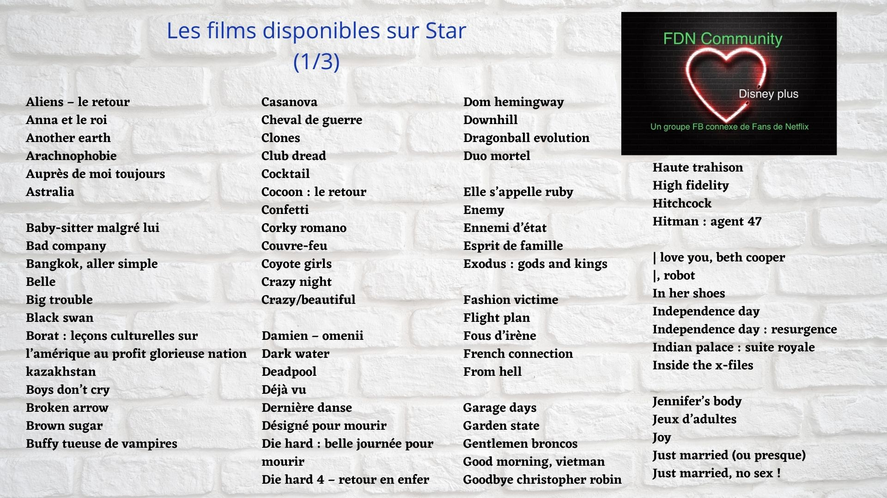
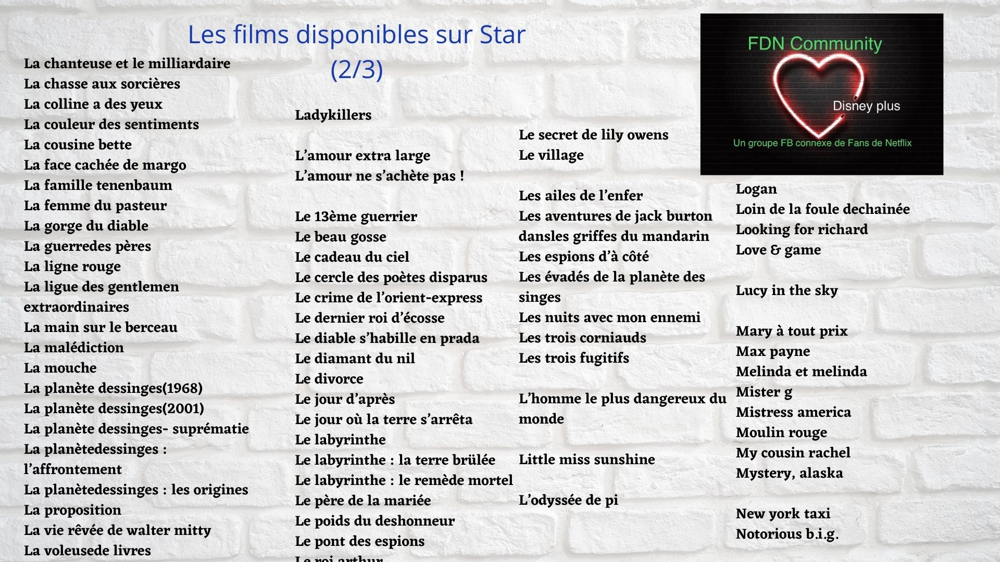
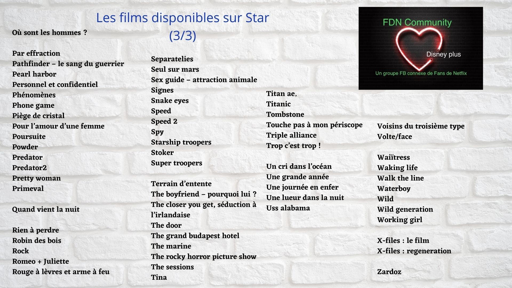
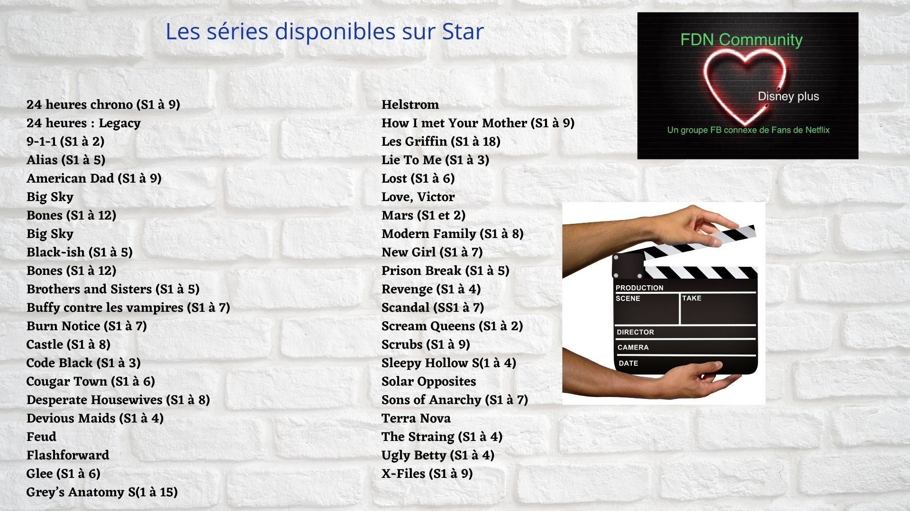

<section class="article-disney-plus py-5">
  <div class="container">
    <div class="row justify-content-center">
      <article class="col-sm-8">
        <h2>Section Star</h2>
        <h5>Découvrez le contenu de la nouvelle section de Disney Plus lors de son lancement le 23 février 2021</h5>

          <p>
            Hello les Fans de Disney !!
          </p>
          <p>
            Nous vous l’annoncions il y a quelques temps, la section « Star » sur Disney Plus fera son apparition dès le 23 février prochain. Elle sera destinée à un public plus adulte et accessible via un code parental.
            Disney assure « En Europe, Star proposera 450 titres dès son lancement et environ 1000 titres dont 35 séries exclusives des studios Walt Disney d’ici la fin de sa première année de service. ».
          </p>
          <p>
            Le contenu de la section « Star » sera issu des différents catalogues appartenant déjà au groupe Disney tels que Disney Télévision Studios, Fox (FX), 20th Century Studios, 20th Century télévision, Touchstone, etc. Nous retrouverons également des exclusivités Hulu, autre plateforme SVOD américaine détenue par Disney.
          </p>
          <p>
            L’abonnement Disney Plus augmentera de 2€ pour les nouveaux abonnés, les anciens ayant un sursis de 6 mois avant de devoir payer 8,99€ / mois. <br>
            Certains contenus, déjà disponibles sur d’autres SVOD, ne seront pas tous récupérés en exclusivité pour Disney, permettant ainsi à la célèbre souris de pouvoir louer des droits de diffusion aux autres plateformes.
          </p>
          <p>
            Voici donc un aperçu des films et séries que vous pourrez retrouver dans la section « Star » dès son lancement : (voir photos).
          </p>

          <figure class="article_img">
            
            <figcaption>Les films disponibles dans la section Star (1/3)</figcaption>
          </figure>

          <figure class="article_img">
            
            <figcaption>Les films disponibles dans la section Star (2/3)</figcaption>
          </figure>

          <figure class="article_img">
            
            <figcaption>Les films disponibles dans la section Star (3/3)</figcaption>
          </figure>

          <figure class="article_img">
            
            <figcaption>Les séries disponibles dans la section Star</figcaption>
          </figure>

            <br>

        <iframe width="560" height="315" src="https://www.youtube.com/embed/xDpeIkvoDlA" title="YouTube video player" frameborder="0" allow="accelerometer; autoplay; clipboard-write; encrypted-media; gyroscope; picture-in-picture" allowfullscreen></iframe>

        <p class="signature text-end"><strong>Angèle</strong></p>
      </article>
    </div>
  </div>
</section>


